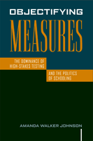

<body bgcolor="#FFFFFF" text="#000000" link="#0000FF" vlink="#CC0000" alink="#CC0000"><center><hr width="350" size="1" align="center" noshade>Examining the political economy of high-stakes testing<hr width="350" size="1" align="center" noshade><p><a href="https://cdcshoppingcart.uchicago.edu/Cart/ChicagoBook.aspx?ISBN=9781592139057&&PRESS=temple" target="_top">Buy this book!</a> | <a href="https://cdcshoppingcart.uchicago.edu/Cart/Cart.aspx?PRESS=temple" target="_top">View Cart</a> | <a href="https://cdcshoppingcart.uchicago.edu/Cart/Cart.aspx?PRESS=temple" target="_top">Check Out</a></p><p></p></center><!--none//--><h1>Objectifying Measures</h1>
<H2>The Dominance of High-Stakes Testing and the Politics of Schooling</H2>
<h3>Amanda Walker Johnson</h3>
<P>cloth 1-59213-905-1 $85.50, Apr 09, <FONT COLOR=#990033>Available</FONT>
<br>paper 1-59213-906-X $30.95, Apr 09, <FONT COLOR=#990033>Available</FONT>
<BR> 222 pp
5.5x8.25
1&nbsp;table 2&nbsp;map(s) 1&nbsp;figure 1&nbsp;halftone
</P><BLOCKQUOTE><I><p>"The novelty of </i>Objectifying Measures<i> is the clarity with which an analysis
of statistical discourse is mapped out to show its complex relationship to inequality. Johnson offers a reader-friendly ethnography that demands attention... Her analysis of assumptions and biases which frame and inform standardized testing as a method of defining and measuring failure/progress is timely and important. Highly recommended!"</i><BR>&#151<b>Katya Gibel Mevorach</b>, Associate Professor, Anthropology
Department & American Studies Concentration at
Grinnell College</p></I></BLOCKQUOTE>
<p>In the past twenty years, the number of educational tests with
high-stakes consequences&#151such as promotion to the next grade
level or graduating from high school&#151has increased. At the same
time, the difficulty of the tests has also increased. In Texas, a Latina
state legislator introduced and lobbied for a bill that would take such
factors as teacher recommendations, portfolios of student work, and
grades into account for the students&#151usually students of color&#151who
failed such tests. The bill was defeated.
</p><p>Using several types of ethnographic study (personal interviews,
observations of the Legislature in action, news broadcasts,
public documents from the Legislature and Texas Education Agency),
Amanda Walker Johnson observed the struggle for the bill’s passage.
Through recounting this experience, <i>Objectifying Measures</i> explores
the relationship between the cultural production of scientific knowledge (of statistics in particular) and the often intuitive resistance to objectification of those adversely affected by the
power of policies underwritten as "scientific."</p>
<BR>&nbsp;<h2>Excerpt</h2><P>Excerpt available at <a href="http://www.temple.edu/tempress">www.temple.edu/tempress</a></p>
<BR>&nbsp;<h2>Reviews</h2>
<p><i>"[C]ompelling... the exhaustive bibliography covering both Texas educational politics and supporting Johnson's political frame are as valuable as the story." </I>
<br>&#151<b><i>Choice </b></i>
<p><i>"The strength of this book is in Johnson’s detailed discussion of how the discourse around testing marginalizes students of color, as well as the thorough account of the political ‘players,’ including the for-profit testing companies and conservatives who support the privatization of schooling.… </i>Objectifying Measures<i> is a thought-provoking book which calls important attention to the subjectivity of the tests that are intended to provide an objective measurement of student learning, as well as the underlying politics of high-stakes testing. Her attention to these issues comes at a critical time given the upcoming reauthorization of NCLB." </I>
<br>&#151<b><i>Teachers College Record</b></i>
<p><i>"This is a dense and ambitious work. The author frames her research at the nexus of activist anthropology, autoethnography, feminist critique, and Critical Race Theory...This complex framing is powerful and unique.... Johnson’s 'anthropological view of the culture of measurement that places such emphasis on test results, specifically on the production of testing statistics,' is an insightful critique of the discourse around statistics and educational inequality." </I> <br>&#151<b><i>Anthropology and Education Quarterly</b></i>
<p><i>"[A]n interesting critical approach to the politics of American education that consciously takes the risky choice of using social science as a tool for political activism." </I>
<br>&#151<b><i>Contemporary Sociology </b></i>
<BR>&nbsp;<h2>Contents</h2><P>
<p>Acknowledgments
<br>1. Introduction
<br>2. Contextualizing Education within the Racial Politics of Texas
<br>3. Statistical Objectification, Governmentality, and Race in High- Stakes Testing
<br>4. Commodification, Privatization, and Political Economy of Statistical Discourse
<br>5. Statistical Objectification, Truth, and Hegemony
<br>6. Between Women and the State of Texas: Representation and the Politics of Experience
<br>7. Conclusion
<br>Chronology: Timeline of Testing in Texas, 1970– 2003
<br>Notes
<br>Bibliography
<br>Index
</P><BR>&nbsp;<H2>About the Author(s)</H2>
<table><tr><td valign="top"><img src="/tempress/authors/1993_au1.gif" height="90" width="75"></td><td width="100%" valign="middle"><p><b>Amanda Walker Johnson</b> is Assistant Professor of
Anthropology at the University of Massachusetts Amherst.</P></td></tr></table>
<BR><H2>Subject Categories</H2>
<p><A HREF="/tempress/education.html" TARGET="_top">Education</a>
<BR><A HREF="/tempress/race.html" TARGET="_top">Race and Ethnicity</a>
<BR><A HREF="/tempress/social.html" TARGET="_top">Community Organizing and Social Movements</a>
</p>
<p align="center"><a href="https://cdcshoppingcart.uchicago.edu/Cart/ChicagoBook.aspx?ISBN=9781592139057&&PRESS=temple" target="_top">Buy this book!</a> | <a href="https://cdcshoppingcart.uchicago.edu/Cart/Cart.aspx?PRESS=temple" target="_top">View Cart</a> | <a href="https://cdcshoppingcart.uchicago.edu/Cart/Cart.aspx?PRESS=temple" target="_top">Check Out</a></p><p><font face="Arial" size="1"><a href="copyright.html" onMouseOver="window.status='Web Copyright Policy';return true;" onMouseOut="window.status=''" title="Web Copyright Policy">&copy;</a> 2015 <a href="http://www.temple.edu" target="new" onMouseOver="window.status='Link to Temple University home page';return true;" onMouseOut="window.status=''" title="Link to Temple University home page">Temple University</a>. All Rights Reserved. http://www.temple.edu/tempress/titles/1993_reg.html</font></p>